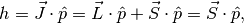
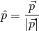
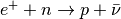
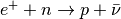

This chapter is about the preliminary knowledge required by this topic.
Projection of spin onto direction of momentum,

where

Neutrino
Masses of Neutrinos
Enter search terms or a module, class or function name.
 and .
and .